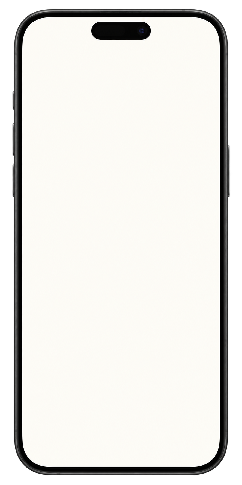

01
Organize o dia.
Horários, medicamentos e pequenos cuidados em uma visão compartilhada.

9:41••• ▰
serenitas H
BOM DIA, MARIANA
O dia de
Helena.
✦ Tudo tranquilo hoje8 de 9 cuidados
SEU DIA, ORGANIZADO
08:00MedicamentoRegistrado por Helena✓
09:30Hidratação975 ml de 1.500 ml✓
16:00FisioterapiaPróximo cuidado
InícioRotinaFamília